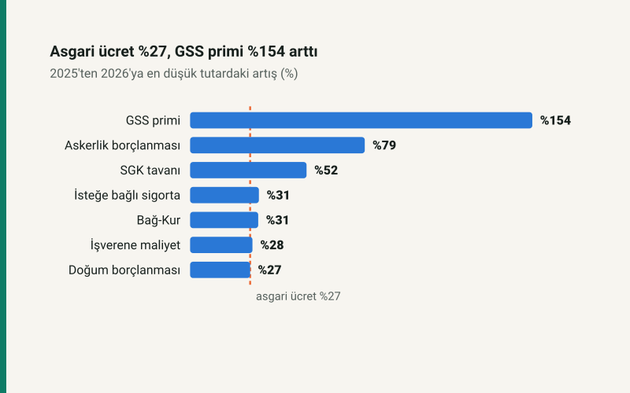

Kısa cevap
7566 sayılı Kanun 2026 başından itibaren malullük, yaşlılık ve ölüm primini bir puan artırdı: Bağ-Kur %34,75'ten %35,75'e, isteğe bağlı sigorta %32'den %33'e, işveren payı %20,75'ten %21,75'e. Genel sağlık sigortası primi asgari ücretin %3'ünden %6'sına, hizmet borçlanması %32'den %45'e çıktı; SGK tavanı asgari ücretin 7,5 katından 9 katına yükseldi.
İmalat dışındaki işveren için prim indirimi 4 puandan 2 puana indi; imalatta 5 puan sürüyor.
Kalem kalem
| Kalem | 2025 oran | 2026 oran | 2025 tutar | 2026 tutar | Artış |
|---|---|---|---|---|---|
| Bağ-Kur (4/b) | %34,75 | %35,75 | 9.036,91 TL | 11.808,23 TL | %30,67 |
| İsteğe bağlı sigorta | %32 | %33 | 8.321,76 TL | 10.899,90 TL | %30,98 |
| Genel sağlık sigortası (60/g) | %3 | %6 | 780,17 TL | 1.981,80 TL | %154,02 |
| Askerlik borçlanması, günlük | %32 | %45 | 277,39 TL | 495,45 TL | %78,61 |
| Doğum borçlanması, günlük | %32 | %32 | 277,39 TL | 352,32 TL | %27,01 |
| Asgari ücretin işverene maliyeti (teşviksiz) | %20,75 | %21,75 | 31.921,75 TL | 40.874,63 TL | %28,05 |
| SGK tavanı | 7,5 kat | 9 kat | 195.041,25 TL | 297.270,00 TL | %52,41 |
Bağ-Kur ve isteğe bağlı sigortada artışın 27 puanı asgari ücretten, kalanı oranın bir puan artmasından geliyor. Genel sağlık sigortası primi oran iki katına çıktığı için 2,54 katına çıktı. SGK tavanının yükselmesi yüksek ücretlilerin ve işverenlerinin prim tabanını genişletti; ayrıntısı SGK prim tavanı yazısında.
İşveren tarafı
İşveren payı bir puan artarken imalat dışındaki işverenin prim indirimi 4 puandan 2 puana indi. İkisi birlikte, imalat dışı işverenin indirim sonrası oranını %16,75'ten %19,75'e çıkardı. Ayrıntısı: SGK prim indirimi 2 puana indi.
Genel sağlık sigortasında gelir testi
Hanede kişi başı gelir brüt asgari ücretin üçte birinden (2026'da 11.010 TL) azsa prim devletçe ödenir. Değilse 2026'da ayda 1.981,80 TL; bir yılda 23.781,60 TL.
Kendi durumunuz için: Bağ-Kur, isteğe bağlı sigorta ve borçlanma hesaplama.
Kaynaklar
- 7566 sayılı Kanun (Resmî Gazete, 19 Aralık 2025).
- SGK 2026/2 Genelgesi: 2026 prime esas kazanç sınırları ve işlemlere esas tutarlar.
- 5510 sayılı Kanun m.41, m.51, m.60, m.81, m.82; ÇSGB asgari ücretin işverene maliyeti tabloları.
Tüm tutarlar sitenin bordro parametrelerinden ve SGK prim modülünden üretilir; otomatik testler 2025 ve 2026 genelge tutarlarını sabitler.
Sık sorulan sorular
2026'da GSS primi ne kadar?
Ayda 1.981,80 TL: brüt asgari ücretin %6'sı. 2025'te %3'tü (780,17 TL).
2026'da Bağ-Kur primi ne kadar arttı?
En düşük prim 9.036,91 TL'den 11.808,23 TL'ye çıktı: %30,67. Oran %34,75'ten %35,75'e yükseldi.
SGK tavanı 2026'da ne kadar?
Aylık 297.270 TL: brüt asgari ücretin 9 katı. 2025'te 7,5 kattı (195.041,25 TL).